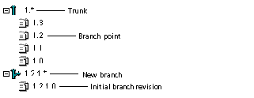

Branching Files
You branch revisions to create a separate line of development that diverges from a revision on the trunk (main line of development) or from another branch.
To create a branch by checking in a non-tip revision:
- From the Revision pane, select the non-tip revision that you want to use as the starting point of the branch.
- Select Actions | Check Out. The Check Out File dialog box appears.
- Click OK. A confirmation dialog box warns that locking the selected revision will create a branch when the revision is checked in and asks if you wish to check out the file anyway.
- Click Yes. Version Manager checks out the revision to the location currently set as the workfile location and places a lock on the revision.
- Modify the workfile as necessary and save your changes.
- To check the workfile back in to the archive, select Actions | Check In. The Check In dialog box appears.
- Enter a change description in the Description field.
- Click OK. Version Manager creates a branch from the non-tip revision and displays the branches (illustrated by the branch icon ) and assigns it the branch point revision number followed by 1.*, and assigns the initial branch revision the branch point revision number followed by 1.0.

To force a branch at the tip revision:
- From the Revision pane, select the tip revision you want to use as the starting point of the branch.
- Select Actions | Check Out. The Check Out File dialog box appears.
- Click OK. The tip revision is checked out and locked.
- Modify the workfile as necessary and save your changes.
- Select Actions | Check In. The Check In dialog box appears.
- Enter a change description in the Description field.
- Click the Advanced tab and select the Force branch check box.
- Click OK. Version Manager creates a branch from the tip revision and displays the branches (illustrated by the branch icon ) in the Revision pane.
To create a branch by checking in a revision with multiple locks:
To check in a revision with multiple locks, you must first enable your project/project database for multiple locking.
- From the Revision pane, select a locked revision.
- To apply a secondary lock, select Actions | Check Out or Actions| Lock. The Check Out File or Lock File dialog box appears.
- Click OK. A confirmation dialog box warns that the revision is already locked and asks if you want apply an additional lock.
- Click Yes. A second confirmation dialog box warns that locking the selected revision will force a branch when the revision is checked in and asks if you wish to lock or check out the file anyway.
- Click Yes. Version Manager checks out or locks the revision.
- Modify the workfile as necessary and save your changes.
- Select Actions | Check In. The Check In dialog box appears.
- Enter a change description in the Description field.
- Click OK. Because you are checking in a workfile with multiple locks, the Select Revision dialog box appears.
- From the New Revision drop-down list, select the revision number that will create a new branch when the workfile is checked in.
- Click OK. Version Manager creates a branch from the revision and displays the branches (illustrated by the branch icon ) in the Revision pane.
See Also